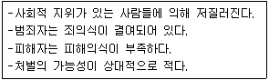
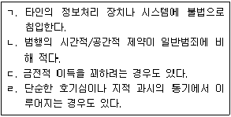

경비지도사-2차(범죄학) (2018-11-17 기출문제)
1. 갈등주의 범죄학 이론가는?
- 볼드(Vold)
- 허쉬 (Hirschi)
- 에이커스(Akers)
- 뒤르켐(Durkheim)
(정답률: 알수없음)

2. 머튼(Merton) 의 아노미이론애서 5가지 적응양식 중 의례형(ritualism)에 대한 문화적 목표와 제도적 수단의 수용(+) 또는 거부(-)를 맞게 짝지은 것은?
- +, +
- +, -
- -, +
- -, -
(정답률: 알수없음)
3. 샘슨과 라웁(Sampson & Laub)의 생애과정이론(life course theory)에서 취직, 결혼, 군 입대처럼 범죄를 중단하고 정상적인 삶으로 돌아가게 하는 상황을 지칭하는 개념은?
- 지속성 (stability)
- 전환점 (turning point)
- 경제자본 (economic capital)
- 신념 (belief)
(정답률: 알수없음)
4. 버제스(Burgess)의 동심원이론에서 범죄가 가장 많이 발생하는 곳은?
- 통근지대
- 전이지대
- 노동자 주거지대
- 중산층 주거지대
(정답률: 알수없음)
5. 조직범죄의 주요 활동영역이 아닌 것은?
- 인신매매
- 마약류 밀거래
- 자금세탁
- 직권남용
(정답률: 알수없음)
6. 규제 약물 중 각성제끼리 연결된 것은?
- 메스암페타민(필로폰) - 코카인
- 아편 - 코카인
- 메스암페타민(필로폰) - 아편
- 헤로인 - LSD
(정답률: 알수없음)
7. 다음의 특성을 가진 범죄는 무엇언가?

- 조직범죄
- 성범죄
- 폭력범죄
- 화이트칼라범죄
(정답률: 알수없음)
8. 범죄자를 청소년기 한정형 범죄자와 생애지속형 범죄자로 구분한 학자는?
- 모피트 (Moffitt)
- 쇼 (Shaw)
- 메스너 (Messner)
- 갓프레드슨 (Gottfredson)
(정답률: 알수없음)
9. 사이버범죄 중 해킹의 특징을 모두 고른 것은?

- ㄱ, ㄷ
- ㄱ, ㄴ, ㄹ
- ㄴ, ㄷ, ㄹ
- ㄱ, ㄴ, ㄷ, ㄹ
(정답률: 알수없음)
10. 시카고학파의 사회해체이론을 현대적으로 계승한 이론으로 사회자본, 주민간의 관계망 및 참여 등을 강조하는 이론은?
- 집합효율성이론
- 자아통제이론
- 일상활동이론
- 생활양식이론
(정답률: 알수없음)
11. 경찰청의 「2018 치안전망」상 최근 우리나라의 강도ㆍ절도범죄는 감소추세이다. 그 이유로 보기 어려운 것은?
- 신용카드 사용 증가로 현금소지 감소
- CCTV, 블랙박스 등 감시장치의 증가
- 절도범의 많은 비중을 차지하는 10대 인구비율 감소
- 인터넷 음란물 증가와 포르노 산업의 성장
(정답률: 알수없음)
12. 전국규모 범죄피해조사에 관한 설명으로 옳지 않은 것은?
- 범죄피해자의 특성을 파악할 수 있다.
- 범죄예방대책 수립에 활용할 수 있다.
- 살인범죄의 정확한 파악이 가능하다.
- 일반적으로 조사에 시간과 비용이 많이 소요된다.
(정답률: 알수없음)
13. 대검찰청 「2017 범최분석」상 스마트폰 등 전자기기 사용의 보편화로 인하여 2011년부터 2015년까지 증가하고 있는 성폭력범죄 유형은?
- 강간살인
- 특수강도강간
- 강간치상
- 카메라 등 이용촬영
(정답률: 알수없음)
14. 법과 범죄에 관한 상호작용론적 관점에 해당하는 것은?
- 법은 지배계급의 도구이다.
- 법은 하류층을 통제하기 위해 사용된다.
- 어떤 행위를 사회가 낙인찍기 때문에 범죄가 된다.
- 범죄는 정치적으로 정의되는 개념이다.
(정답률: 알수없음)
15. 공식범죄통계의 장점이 아닌 것은?
- 방대한 자료가 정기적으로 수집된다.
- 치안수요를 예측할 수 있다.
- 범죄학 연구의 기초자료가 된다.
- 범죄의 암수를 파악할 수 있다.
(정답률: 알수없음)
16. 사회과정(미시적) 관점의 범죄이론은?
- 차별적 접촉이론
- 사회해체이론
- 비판범죄학이론
- 하위문화이론
(정답률: 알수없음)
17. A범죄학자는 TV의 공격상황을 시청한 어련이와 시청하지 않은 어린이의 놀이과정에서 공격적 신체활동 차이를 관찰하는 연구를 수행하였다. A가 수행한 연구방법은 무엇인가?
- 자기보고식조사
- 범죄피해자조사
- 실험연구
- 문헌연구
(정답률: 알수없음)
18. 범죄학의 정의와 특성에 관한 설명으로 옳지 않은 것은?
- 범죄학에 대한 정의는 명확하고 통일되어 있다.
- 범죄행위를 연구하는 과학적 접근법이다.
- 학제 간 연구의 성격을 갖고 있다.
- 하나의 범죄행위에 대해 다양한 해석이 가능하다.
(정답률: 알수없음)
19. 연구사회학적 특성과 범죄의 일반적 관계에 관한 설명으로 적절하지 않은 것은?
- 사회경제적 지위와 범죄의 관계를 일률적으로 설명하기는 어렵다.
- 폭력범죄의 경우 남성의 범죄율은 여성의 범죄율보다 높다.
- 폭력범죄 발생건수는 대도시가 농촌지역보다 더 많다.
- 가정의 결손여부는 청소년비행의 일관된 예측요인이다.
(정답률: 알수없음)
20. 여성의 사회적 역할이 변하고 생활양식이 남성과 비슷해지면서 여생의 범죄율도 남성의 범죄율에 근접할 것이라고 설명하는 개념은?
- 기사도 가설 (chivalry hypothesis)
- 성숙효과(maturation effect)
- 신여성범죄자 (new female criminal)
- 은폐된 범죄성 (masked criminality)
(정답률: 알수없음)
21. 대검찰청의 「2017 범죄분석」상 우리나라의 범죄발생 추이에 관한 설명으로 옳지 않은 것은?
- 범죄율(crime rate)은 인구 1만 명 당 범죄발생건수를 의미한다.
- 대검찰청의 범죄분석은 국가 전체의 공식적 범죄발생 추이를 보여준다.
- 2016년의 사기범죄 건수는 2007년보다 증가하였다.
- 방화범죄는 2011년부터 2016년까지 감소하고 있다.
(정답률: 알수없음)
22. 재산범죄가 아닌 것은?
- 사기
- 차량절도
- 횡령
- 금지약물남용
(정답률: 알수없음)
23. 현행법상 성범죄로 유죄판결이 확정된 자의 공개되는 신상정보가 아닌 것은?
- 성명
- 가족관계
- 성폭력범죄 전과사실
- 등록대상 성범죄 요지
(정답률: 알수없음)
24. 폭력범죄자의 특정이 아닌 것은?
- 높은 법 순응성
- 높은 공격성
- 폭력에 대한 강한 합리화 성향
- 폭력에 대한 수용적 태도
(정답률: 알수없음)
25. 연쇄살인과 연속살인을 구분하는 기준은?
- 목표달성의 실패
- 심리적 냉각기
- 긍정적 자극의 발생
- 애착
(정답률: 알수없음)
26. 초기 실증주의 범죄학자는?
- 레클리스 (Reckless)
- 터크 (Turk)
- 퀴니 (Quinney)
- 롬브로조 (Lombroso)
(정답률: 알수없음)
27. 생물학적 범죄이론에 관한 설명으로 옳지 않은 것은?
- 개인적, 사회적 통제가 약할 때 범죄가 발생한다.
- 한정된 표본집단을 연구대상으로 하는 단점이 있다.
- 연구주제로는 쌍생아, 입양아 연구 등이 있다.
- 범죄의 원인을 주로 선천적 요인으로 파악한다.
(정답률: 알수없음)
28. 사회유대이론의 구성요소가 아닌 것은?
- 애착 (attachment)
- 신념 (belief)
- 모방(imitation)
- 참여 (involvement)
(정답률: 알수없음)
29. 사이코패스가 저지르는 범죄를 잘 설명하는 이론은?
- 성격(인성)이론
- 하위문화이론
- 제도적 아노미이론
- 사회해체이론
(정답률: 알수없음)
30. A는 학교폭력을 상습적으로 저지르는 B와 자주 어울라면서 범죄기술, 법위반에 대한 우호적 정의(definition) 등을 배워 편의점 절도를 저지르게 되었다. 그 후에 A는 학교폭력 친구들과의 친밀한 교제를 통해 상습범죄자의 길로 접어들었다. 위의 상황을 잘 설명하는 범죄이론은?
- 서덜랜드(Sutherland)의 차별접촉이론
- 프로이드(Freud)의 정신분석이론
- 베커(Becker)의 낙인이론
- 머튼(Merton)의 아노미이론
(정답률: 알수없음)
31. 낙인이론과 관련 없는 개념은?
- 악의 극화(dramatization of evil)
- 이차적 일탈(secondary deviance)
- 리비도(libido)
- 아웃사이더(outsider)
(정답률: 알수없음)
32. 비범죄화의 논의대상이 아닌 것은?
- 성매매
- 강도죄
- 단순도박죄
- 낙태죄
(정답률: 알수없음)
33. 소년법상 보호처분에 해당하지 않는 것은?
- 수강명령
- 보호관찰관의 단기 보호관찰
- 단기 소년원 송치
- 약물치료명령
(정답률: 알수없음)
34. 심신장애 상태 마약류ㆍ알코올이나 그 밖의 약물중독 상태 정신성적(精神性的) 장애가 있는 상태 등에서 범죄행위를 한 자로서 재범의 위험성이 있고 특수한 교육ㆍ개선 및 치료가 필요하다고 인정되는 자에 대하여 적절한 치료와 보호를 하는 제도는?
- 치료감호제도
- 보호감호제도
- 보안관찰제도
- 치료보호제도
(정답률: 알수없음)
35. 사회 내 처우에 해당하는 것은?
- 분류처우제도
- 귀휴제도
- 사회봉사명령제도
- 외부통근제도
(정답률: 알수없음)
36. 브랜팅햄과 파우스트(Brantingham & Faust)가 분류한 3차적 범죄예방에 해당하는 것은?
- 이웃감시
- 특별예방
- 상황적 범죄예방
- 민간경비
(정답률: 알수없음)
37. 회복적 사법에 기초한 프로그램이 아닌 것은?
- 피해자와 가해자의 화해
- 양형써클
- 전자장치부착
- 가족집단회합
(정답률: 알수없음)
38. 형벌의 종류 중 재산형에 해당하는 것은?
- 벌금
- 징역
- 금고
- 구류
(정답률: 알수없음)
39. 범죄피해자 보호법상 범죄피해 구조대상에 해당하지 않는 범죄는?
- 살인죄
- 상해죄
- 강간죄
- 횡령죄
(정답률: 알수없음)
40. 경찰의 순찰방식 중 도보순찰과 차량순찰을 비교한 것으로 옳지 않은 것은?
- 도보순찰은 차량순찰에 비하여 주민과의 접촉이 용이할 수 있다.
- 도보순찰은 차량순찰에 비하여 치밀하게 정황을 관찰할 수 있다.
- 도보순찰은 차량순찰에 비하여 더 넓은 지역을 순찰할 수 있다.
- 도보순찰은 차량순찰에 비하여 좁은 골목길을 순찰하는데 유용할 수 있다.
(정답률: 알수없음)